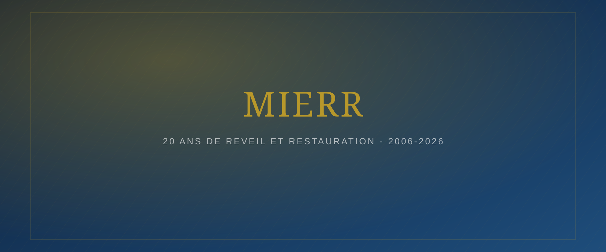
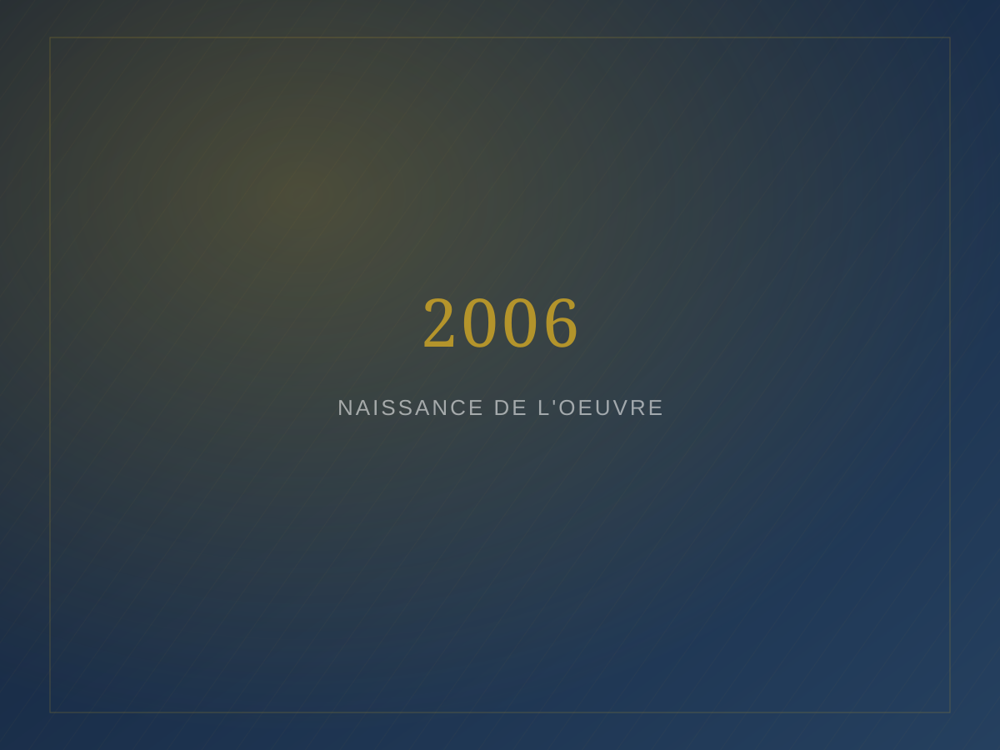
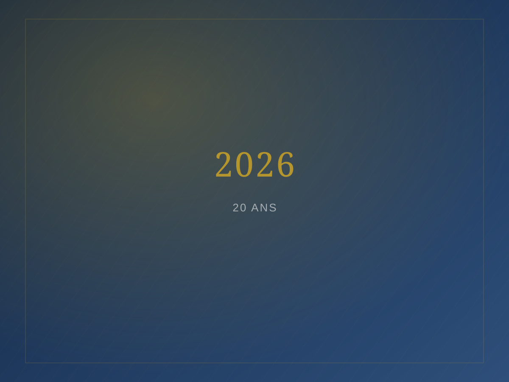
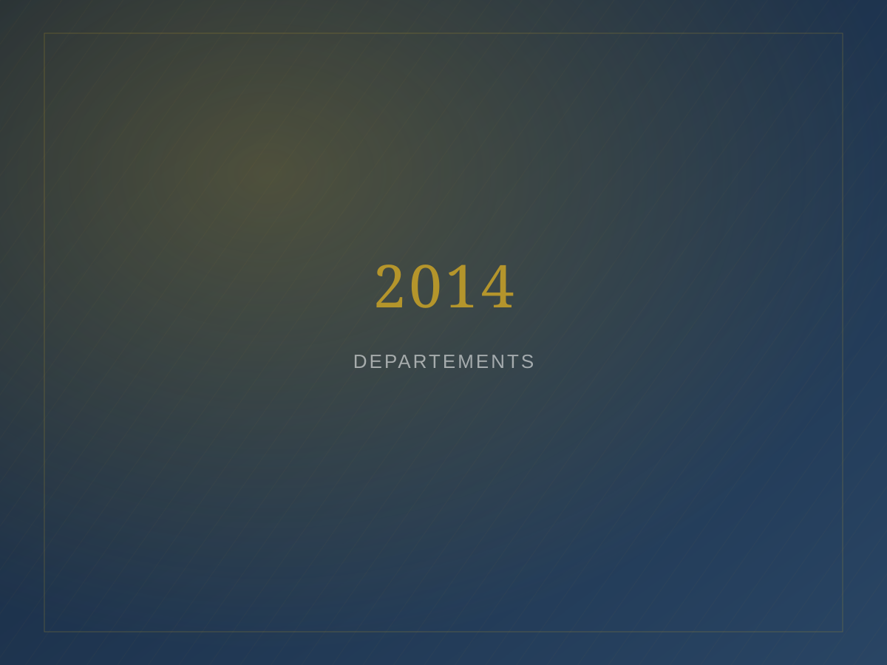
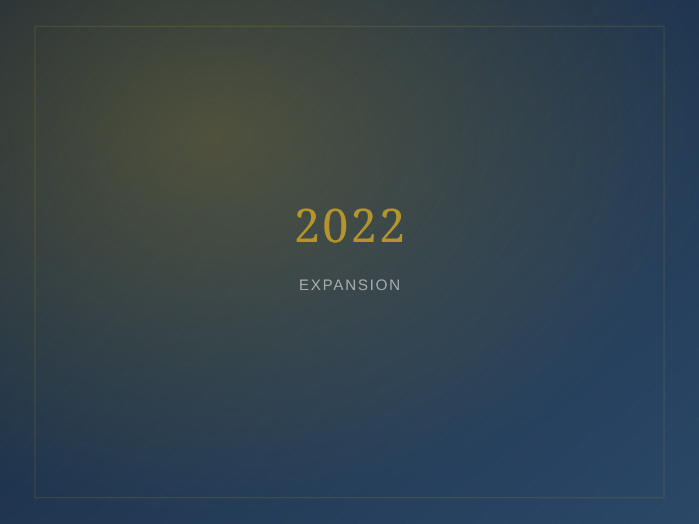
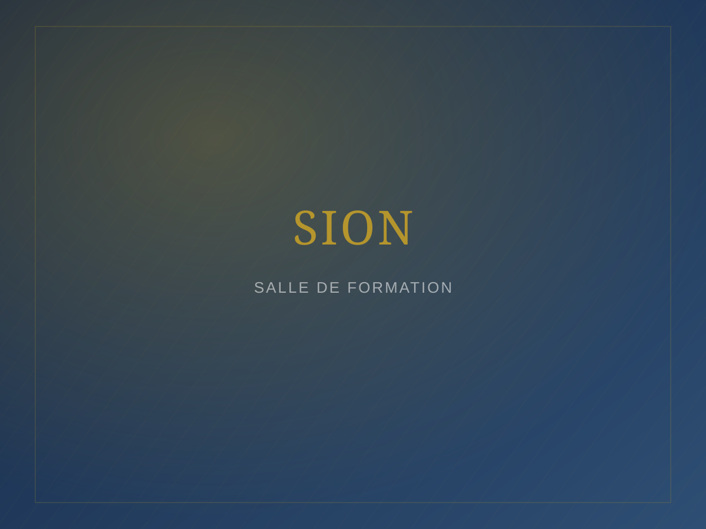
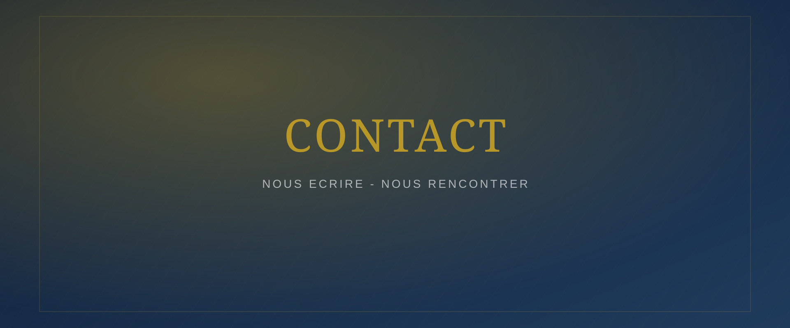

Annonce
[Titre de l'actualité à venir]
[Résumé de l'actualité — deux à trois lignes présentant l'information aux visiteurs du site.]

La MIERR est une communauté chrétienne fondée en 2006, engagée dans le réveil spirituel, la formation des croyants et l'accompagnement des leaders au service du Royaume.
La Mission Internationale Évangélique de Réveil et de Restauration (MIERR) est une communauté chrétienne fondée en 2006, engagée dans l'annonce de l'Évangile, la formation des croyants, le réveil spirituel, la restauration des vies et la formation des leaders.
En savoir plus sur la MIERR

Annonces, cultes, conventions, conférences, séminaires, formations, témoignages et communiqués de l'église.
[Résumé de l'actualité — deux à trois lignes présentant l'information aux visiteurs du site.]

[Résumé de l'actualité — deux à trois lignes présentant l'information aux visiteurs du site.]

[Résumé de l'actualité — deux à trois lignes présentant l'information aux visiteurs du site.]
« Si mon peuple sur qui est invoqué mon nom s'humilie, prie, et cherche ma face, et s'il se détourne de ses mauvaises voies, je l'exaucerai des cieux, je lui pardonnerai son péché, et je guérirai son pays. »2 Chroniques 7:14
Trois grands départements portent l'action de la MIERR auprès des femmes, de la jeunesse et des jeunes filles.
Le département des femmes de la MIERR : identité, mission, activités et programmes.
DécouvrirLe département de la jeunesse de la MIERR : identité, mission, activités et programmes.
DécouvrirLa section dédiée à l'accompagnement des jeunes filles au sein de la MIERR.
DécouvrirUne formation biblique et pastorale destinée aux leaders des départements, aux chrétiens aspirant à servir le Seigneur, aux futurs pasteurs et à toute personne — membre ou non de la MIERR — désireuse d'approfondir sa connaissance biblique.

Une question, une demande de renseignement ou un besoin d'accompagnement ? L'équipe de la MIERR vous répond.
